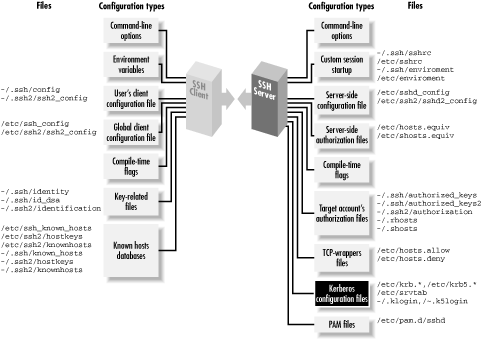
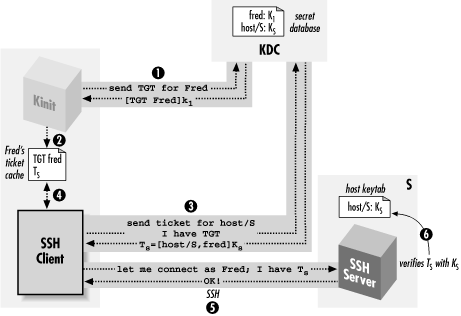
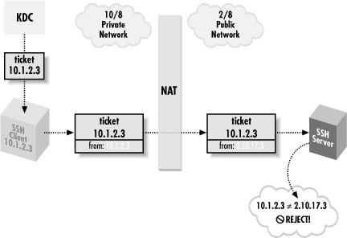

|  |
11.4. Kerberos and SSH
Kerberos is an authentication system designed to operate securely in an environment where networks may be monitored and user workstations aren't under central control. [Section 1.6.3, "Kerberos"] It was developed as part of Project Athena, a wide-ranging research and development effort carried out at MIT between 1983 and 1991, funded primarily by IBM and Digital Equipment Corporation. Project Athena contributed many other pieces of technology to the computing world, including the well-known X Window System. Kerberos is very different in character and design from SSH; each includes features and services the other lacks. In this study, we compare the two systems in detail, and then discuss how to combine them to obtain the advantages of both. If your site already uses Kerberos, you can add SSH while maintaining your existing account base and authentication infrastructure. (Figure 11-11 shows where Kerberos fits into the scheme of SSH configuration.) If you aren't using Kerberos, its advantages may also be compelling enough to motivate you to install it, especially for large computing environments.
Figure 11-11. Kerberos configuration (highlighted parts)
There are two versions of the Kerberos protocol, Kerberos-4 and Kerberos-5. Free reference implementations of both are available from MIT:ftp://athena-dist.mit.edu/pub/kerberos/Kerberos-5 is the current version, and Kerberos-4 is no longer actively developed at MIT. Even so, Kerberos-4 is still in use in many contexts, especially bundled into commercial systems (e.g., Sun Solaris, Transarc AFS). SSH1 supports Kerberos-5, and OpenSSH/1 supports Kerberos-4. The current draft of the SSH-2 protocol doesn't yet define a Kerberos authentication method, but as this book went to press SSH 2.3.0 was released with "experimental" Kerberos-5 support, which we haven't covered here (but which should work substantially as described with SSH1).
11.4.1. Comparing SSH and Kerberos
While they solve many of the same problems, Kerberos and SSH are very different systems. SSH is a lightweight, easily deployed package, designed to work on existing systems with minimal changes. Kerberos, in contrast, requires you to establish a significant infrastructure before use.11.4.1.1. Infrastructure
Let's consider an example: allowing users to create secure sessions between two machines. With SSH, you simply install the SSH client on the first machine and the server on the second, start the server, and you're ready to go. Kerberos, however, requires the following administrative tasks:- Establish at least one Kerberos
Key Distribution Center
(KDC) host. The KDCs are central to the Kerberos system and must be
heavily secured; typically they run nothing but the KDC, don't
allow remote login access, and are kept in a physically secure
location.[139] Kerberos
can't operate without a KDC, so it is wise to establish backup
or "slave" KDCs also, which then must be synchronized
periodically with the master. A KDC host might also run a remote
administration server, a credentials-conversion server for Kerberos-4
compatibility in a Kerberos-5 installation, and other server programs
depending on your needs.
[139]Although, if remote login access to a KDC is desired, SSH is a good way to do it!
- For each Kerberos user, add an account (or "user principal") to the KDC database.
- For each application server that will use Kerberos to authenticate clients, add an account (or "service principal") to the KDC database. A separate principal is required for each server on each host.
- Distribute the service principal cryptographic keys in files on their respective hosts.
- Write a sitewide Kerberos configuration file ( /etc/krb5.conf ) and install it on all hosts.
- Install Kerberos-aware applications. Unlike SSH, Kerberos isn't transparent to TCP applications. For example, you might install a version of telnet that uses Kerberos to provide a strongly authenticated, encrypted remote login session similar to that of ssh.
- Deploy a clock-synchronization system such as Network Time Protocol (NTP). Kerberos relies on timestamps for proper operation.
11.4.1.2. Integrating with other applications
Another difference between SSH and Kerberos is their intended use. SSH is a set of programs that work together via the SSH protocol, designed to use in combination with existing applications with minimal changes. Consider programs like CVS [Section 8.2.6.1, "Example: CVS and $LOGNAME "] and Pine [Section 11.3, "Pine, IMAP, and SSH"] that invoke the insecure rsh program internally to run remote programs. If configured to use ssh instead of rsh, the program's remote connections become secure; the introduction of ssh is transparent to the program and its remote partner. Alternatively, if an application makes a direct network connection to a TCP service, SSH port forwarding can secure that connection simply by telling the application to use a different server address and port. Kerberos, on the other hand, is designed as an authentication infrastructure, together with a set of programming libraries.[140] The libraries are for adding Kerberos authentication and encryption to existing applications; this process is called kerberizing the application. The MIT Kerberos distribution comes with a set of common, kerberized services, including secure versions of telnet, ftp, rsh, su, etc.[140]SSH2 has recently moved towards this model. It is similarly organized as a set of libraries implementing the SSH-2 protocol, accessed via an API by client and server programs.
11.4.1.3. Security of authenticators
The extra complexity of Kerberos provides properties and capabilities that SSH doesn't. One major win of Kerberos is its transmission and storage of authenticators (i.e., passwords, secret keys, etc.). To demonstrate this advantage, let's compare Kerberos's ticket system with SSH's password and public-key authentication. SSH password authentication requires your password each time you log in, and it is sent across the network each time. The password isn't vulnerable during transmission, of course, since SSH encrypts the network connection. However, it does arrive at the other side and exist in plaintext inside the SSH server long enough for authentication to occur, and if the remote host has been compromised, an adversary has an opportunity to obtain your password. SSH cryptographic authentication, on the other hand, may require you to store your private keys on each client host, and you must have authorization files in each server account you want to access. This presents security and distribution problems. A stored key is protected by encryption with a passphrase, but having it stored at all on generally accessible hosts is a weakness Kerberos doesn't have. An adversary who steals your encrypted key may subject it to an offline dictionary attack to try to guess your passphrase. If successful, your adversary has access to your accounts until you notice and change all your key and authorization files. This change may be time-consuming and error-prone if you have several accounts on different machines, and if you miss one, you're in trouble. Kerberos ensures that a user's password[141] travels as little as possible and is never stored outside the KDC. When a user identifies herself to the Kerberos system, the identifying program (kinit) uses her password for an exchange with the KDC, then immediately erases it, never having sent it over the network in any form nor stored it on disk. A client program that subsequently wants to use Kerberos for authentication sends a "ticket," a few bytes of data cached on disk by kinit, which convinces a kerberized server of the user's identity. Tickets are cached in files readable only by their users, of course, but even if they are stolen, they are of limited use: tickets expire after a set amount of time, typically a few hours, and they are specific to a particular client/server/service combination.[141]Actually, the secret key derived from the user's password, but the distinction isn't relevant here.A stolen Kerberos ticket cache can be the target of a dictionary attack, but with an important difference: user passwords aren't present. The keys in the cache belong to server principals, and moreover, they are typically generated randomly and hence less vulnerable to a dictionary attack than user passwords. Sensitive keys are stored only on the KDCs, under the theory that it is much easier to effectively secure a small set of limited-use machines, rather than a large set of heterogeneous, multipurpose servers and workstations over which the administrator may have little control. Much of Kerberos's complexity results from this philosophy.
11.4.1.4. Account administration
Kerberos also serves other functions beyond the scope of SSH. Its centralized user account database can unify those of disparate operating systems, so you may administer one set of accounts instead of keeping multiple sets synchronized. Kerberos supports access control lists and user policies for closely defining which principals are allowed to do what; this is authorization, as opposed to authentication. Finally, a Kerberos service area is divided into realms, each with its own KDC and set of user accounts. These realms can be arranged hierarchically, and administrators can establish trust relationships between parent/child or peer realms, allowing automatic cross-authentication between them.11.4.1.5. Performance
Kerberos authentication is generally faster than SSH public-key authentication. This is because Kerberos usually employs DES or 3DES, whereas SSH uses public-key cryptography, which is much slower in software than any symmetric cipher. This difference may be significant if your application needs to make many short-lived secure network connections and isn't running on the fastest hardware. To sum up: Kerberos is a system of broader scope than SSH, providing authentication, encryption, key distribution, account management, and authorization services. It requires substantial expertise and infrastructure to deploy and requires significant changes to an existing environment for use. SSH addresses fewer needs, but has features that Kerberos installations typically don't, such as port forwarding. SSH is much more easily and quickly deployed and is more useful for securing existing applications with minimal impact.11.4.2. Using Kerberos with SSH
Kerberos is an authentication and authorization (AA) system. SSH is a remote-login tool that performs AA as part of its operation, and one AA system it can use is (you guessed it) Kerberos. If your site already uses Kerberos, its combination with SSH is compelling, since you can apply your existing infrastructure of principals and access controls to SSH. Even if you're not already using Kerberos, you might want to roll it out together with SSH as an integrated solution because of the advantages Kerberos provides. By itself, the most flexible SSH authentication method is public-key with an agent. Passwords are annoying and limited because of the need to type them repeatedly, and the trusted-host method isn't appropriate or secure enough for many situations. Unfortunately, the public-key method incurs substantial administrative overhead: users must generate, distribute, and maintain their keys, as well as manage their various SSH authorization files. For a large site with many nontechnical users, this can be a big problem, perhaps a prohibitive one. Kerberos provides the key-management features SSH is missing. SSH with Kerberos behaves much like public-key authentication: it provides cryptographic authentication that doesn't give away the user's password, and the ticket cache gives the same advantages as the key agent, allowing for single sign-on. But there are no keys to generate, authorization files to set up, or configuration files to edit; Kerberos takes care of all this automatically. There are some disadvantages. First of all, only the Unix SSH packages have Kerberos support; we know of no Windows or Macintosh products containing it. Only the SSH-1 protocol currently supports Kerberos, although there is work in progress in the SECSH working group to add Kerberos to SSH-2. Second, public-key authentication is tied to other important features of SSH, such as forced commands in the authorization file, that can't be used with Kerberos authentication. This is an unfortunate artifact of the way Unix SSH has evolved. Of course, you can still use public-key authentication as needed. You may find the access controls of Kerberos adequate for most needs and use public-key for a few situations in which you need finer-grained control. In the following sections, we explain how to use the SSH Kerberos support. If your site has a kerberized SSH installed, this should be enough to get you going. We can't discuss all the gory detail of building a Kerberos infrastructure, but we do give a quick outline of how to set up Kerberos from scratch, if you have your own systems and want to try it. However, these are just hints, and the description is incomplete. If you're going to use, install, and manage kerberized SSH, you need a more complete understanding of Kerberos than you will get here. A good place to start is:http://web.mit.edu/kerberos/www/
11.4.3. A Brief Introduction to Kerberos-5
In this section, we introduce the important concepts of principals, tickets, and ticket-granting-tickets (TGTs), and follow them with a practical example.11.4.3.1. Principals and tickets
Kerberos can authenticate a user or a piece of software providing or requesting a service. These entities have names, called principals, that consist of three parts: a name, an instance, and a realm, notated as name/instance@REALM.[142] Specifically:[142]This was the case in Kerberos-4. In fact, Kerberos-5 principals have a realm, plus any number of "components" -- the first two of which are conventionally used as the name and instance, as in Kerberos-4.
- The name commonly corresponds to a username for the host operating system.
- The instance, which may be null, typically distinguishes between the same name in different roles. For example, the user res might have a normal, user-level principal res@REALM (note the null instance), but he could have a second principal with special privileges, res/admin@REALM, for his role as a system administrator.
- The realm is an administrative division identifying a single instance of the Kerberos principal database (that is, a list of principals under common administrative control). Each host is assigned a realm, and this identification is relevant to authorization decisions, which we discuss shortly. Realms are always uppercase, by convention.
11.4.3.2. Obtaining credentials with kinit
Let's use an example to get a practical look at Kerberos. Suppose you are on a Unix host spot in the realm FIDO, and you want to use kerberized telnet to log into another host, rover. First, you obtain Kerberos credentials by running the command kinit :kinit assumes that since your username is res and the host spot is in the realm FIDO, you want to obtain credentials for the principal res@FIDO. If you had wanted a different principal, you could have supplied it as an argument to kinit.[res@spot res]$ kinit Password for res@FIDO : *********
11.4.3.3. Listing credentials with klist
Having successfully gotten your credentials with kinit, you can examine them with the klist command, which lists all tickets you have obtained:So far, you have only one ticket, for the service krbtgt/FIDO@FIDO. This is your Kerberos TGT, and it is your initial credential: proof to be presented later to the KDC that you have successfully authenticated yourself as res@FIDO. Note that the TGT has a validity period: it expires in 10 hours. After that, you must do another kinit to reauthenticate yourself.[res@spot res]$ klist Ticket cache: /tmp/krb5cc_84629 Default principal: res@FIDO Valid starting Expires Service principal 07/09/00 23:35:03 07/10/00 09:35:03 krbtgt/FIDO@FIDO
11.4.3.4. Running a kerberized application
Having gotten your credentials, you now telnet to the remote host:The -a option to this kerberized telnet client tells it to do auto-login: that is, it attempts to negotiate Kerberos authentication with the remote side. It succeeds: the remote side accepts your Kerberos identification, and allows you to log in without providing a password. If you return to spot and do a klist, you will see what happened:[res@spot res]$ telnet -a rover Trying 10.1.2.3... Connected to rover (10.1.2.3). Escape character is '^]'. [Kerberos V5 accepts you as "res@FIDO"] Last login: Sun Jul 9 16:06:45 from spot You have new mail. [res@rover res]$
Note that you now have a second ticket, for the service " host/rover@FIDO". This principal is used for remote login and command execution services on the host rover, such as kerberized telnet, rlogin, rsh, etc. When you ran telnet -a rover, the telnet client requested a ticket for host/rover@FIDO from the KDC, supplying your TGT with the request. The KDC validated the TGT, verifying that you had recently identified yourself as res@FIDO , and issued the ticket. telnet stored the new ticket in your Kerberos ticket cache, so that the next time you connect to rover, you can just use the cached ticket instead of contacting the KDC again (at least, until the ticket expires). It then presented the host/rover@FIDO ticket to the telnet server, which verified it and in turn believed that the client had been identified as res@FIDO to the KDC.[res@spot res]$ klist Ticket cache: /tmp/krb5cc_84629 Default principal: res@FIDO Valid starting Expires Service principal 07/09/00 23:35:03 07/10/00 09:35:03 krbtgt/FIDO@FIDO 07/09/00 23:48:10 07/10/00 09:35:03 host/rover@FIDO
11.4.3.5. Authorization
So far we've taken care of authentication, but what about authorization? The telnet server on rover believes that you are res@FIDO, but why should res@FIDO be allowed to log in? This comes back to the host/realm correspondence we've mentioned. [Section 11.4.3.2, "Obtaining credentials with kinit"] Since you didn't specify otherwise, the telnet client told the server that you wanted to log into the account res on rover. (You could have changed that with telnet -l username.) Since rover is also in the realm FIDO, Kerberos applies a default authorization rule: if host H is in realm R, the Kerberos principal u@R is allowed access to the account u@H. Using this default rule implies that the system administrators are managing the correspondence between operating system (OS) usernames and Kerberos principals. If you had tried to log into your friend Bob's account instead, here's what would have happened:[res@spot res]$ telnet -a -l bob rover Trying 10.1.2.3... Connected to rover (10.1.2.3). Escape character is '^]'. [Kerberos V5 accepts you as "res@FIDO"]
Note that authentication was still successful: the telnet server accepted you as res@FIDO. The authorization decision failed, though: Kerberos decided that the principal res@FIDO was not allowed to access the account bob@rover . Bob can allow you to log into his account by creating the file rover:~bob/.k5login, and placing a line in it containing your principal name, res@FIDO. He would also have to place his own principal in there, since if a .k5login file exists, it overrides the default authorization rule, and Bob would be unable to log into his own account. So Bob's authorization file would look like this:telnetd: Authorization failed.
rover:~bob/.k5login: bob@FIDO res@FIDO
11.4.4. Kerberos-5 in SSH1
To enable Kerberos support in SSH1, compile it -- with-kerberos5. [Section 4.1.5.7, "Authentication"] If your Kerberos support files (libraries and C header files) aren't in a standard place and configure can't find them, you can tell it where to look using:Two notes on doing this build:# SSH1 only $ configure ... --with-kerberos5=/path/to/kerberos ...
- The MIT Kerberos-5 Release 1.1 renamed the library
libcrypto.a to
libk5crypto.a, and the SSH1 build files have not
been updated to reflect this. You can either alter the SSH1 Makefile,
or just use:
# cd your_Kerberos_library_directory # ln -s libk5crypto.a libcrypto.a
- The routine krb5_xfree( ) , used in auth-kerberos.c, also appears to have disappeared in 1.1. Replacing all occurrences of krb5_xfree with xfree appears to work.
TIP: If you compile in Kerberos support, the resulting SSH programs work only on a system with Kerberos installed, even if you aren't using Kerberos authentication. The programs will likely refer to Kerberos shared libraries that must be present for the programs to run. Also, SSH performs Kerberos initialization on startup and expects a valid host Kerberos configuration file ( /etc/krb5.conf ).After installation, we recommend setting the serverwide configuration keyword KerberosAuthentication in /etc/sshd_config to "yes" for clarity, even though it is on by default:
Additionally, the host/server@REALM principal must be in the KDC database, and its key must be stored in /etc/krb5.keytab on the server. Once running with Kerberos support, SSH1 operates essentially as we described for kerberized telnet; Figure 11-12 illustrates the process. [Section 11.4.3.4, "Running a kerberized application"] On the client, simply run kinit to obtain your Kerberos TGT, and then try ssh -v. If Kerberos authentication succeeds, you will see:# SSH1 only KerberosAuthentication yes
and in the server log:$ ssh -v server ... server: Trying Kerberos V5 authentication. server: Kerberos V5 authentication accepted. ...
Kerberos authentication accepted joe@REALM for login to account joe from client_host

Figure 11-12. SSH with Kerberos authentication
As with telnet, if you want to allow someone else to log into your account using Kerberos and ssh -l your_username, you must create a ~/.k5login file and place their principal name in it, along with your own.11.4.4.1. Kerberos password authentication
If Kerberos authentication is enabled in the SSH server, password authentication changes in behavior. Passwords are now validated by Kerberos instead of the host operating system. This behavior is usually desired in a fully kerberized environment, where local passwords might not be usable at all. In a mixed environment, however, it may be useful to have SSH fall back on the operating system (OS) password if Kerberos validation fails. The SSH server option that controls this feature is KerberosOrLocalPasswd:This fallback is useful as a fail-safe: if the KDC isn't functioning, you can still authenticate by your OS password (although public-key would be a stronger failsafe authentication method). Another feature of kerberized password authentication is that sshd stores your TGT upon login, so you don't need to run kinit and retype your password to get Kerberos credentials on the remote host.# SSH1, OpenSSH KerberosOrLocalPasswd yes
11.4.4.2. Kerberos and NAT
SSH is frequently used across firewalls, and these days such a boundary often includes network address translation. Unfortunately, Kerberos has a serious problem with NAT. Kerberos tickets usually include a list of IP addresses from which they are allowed to be used; that is, the client presenting the ticket must be transmitting from one of those addresses. By default, kinit requests a TGT limited to the IP addresses of the host it's running on. You can see this with the -a option to klist :[res@spot res]$ klist -a -n
Ticket cache: /tmp/krb5cc_84629
Default principal: res@FIDO
Valid starting Expires Service principal
07/09/00 23:35:03 07/10/00 09:35:03 krbtgt/FIDO@FIDO
Addresses: 10.1.2.1
07/09/00 23:48:10 07/10/00 09:35:03 host/rover@FIDO
Addresses: 10.1.2.1Figure 11-13 illustrates this problem. It has no good solution at the moment. One workaround is the undocumented kinit -A switch, which causes kinit to request a ticket with no addresses in it at all. This trick decreases security, because a stolen ticket cache can then easily be used from anywhere, but it gets around the problem.Trying Kerberos V5 authentication. Kerberos V5: failure on credentials (Incorrect net address).

Figure 11-13. Kerberos and NAT
11.4.4.3. Cross-realm authentication
Kerberos realms are distinct collections of principals under separate administrative control. For instance, you might have two departments, Sales and Engineering, that don't trust each other (just for the sake of example, of course). The Sales people don't want any of those weird Engineers to be able to create accounts in their space, and Engineering certainly doesn't want any sales-droids mucking about with their logins. So you create two Kerberos realms, SALES and ENGINEERING, and have their respective administrators deal with account management in each realm. The catch is, of course, that Sales and Engineering do need to work together. Sales guys need to log into Engineering machines to try out new products, and Engineering needs access to Sales desktops to fix the problems they constantly get into. Suppose Erin the engineer needs Sam from Sales to access her account on an Engineering machine, erin@bulwark . She can place Sam's principal name in her Kerberos authorization file, like so:However, this won't work. To log in, Sam needs a service ticket for host/bulwark@ENGINEERING. Only a KDC for the ENGINEERING realm can issue such a ticket, but an ENGINEERING KDC won't know the principal sam@SALES . In general, an ENGINEERING host has no way of authenticating a principal from the SALES realm. It looks as if Sam will need a principal in the ENGINEERING domain as well, but this poor solution violates the whole idea of having separate realms. It's also cumbersome, since Sam would have to do another kinit each time he wants to access resources in a different realm. The solution to this problem is called cross-realm authentication. First, both realms must be described in the /etc/krb5.conf files on all machines in both realms; Kerberos knows only those realms listed in the configuration file. Then the administrators of the two realms establish a shared secret key between them, called a cross-realm key. The key is realized as a common key for two specially named principals, one in each realm. The key has a direction, and its existence allows one KDC to issue a TGT for the other realm; the other KDC can verify that this TGT was issued by its trusted peer realm using the shared key. With one cross-realm key in place, authentication in one realm provides a verifiable identity in the other realm as well. If the trust is symmetric -- that is, if each realm should trust the other -- then two cross-realm keys are needed, one for each direction.bulwark:~erin/.k5login: erin@ENGINEERING sam@SALES
Note that Sam doesn't have a second principal now, sam@ENGINEERING. Rather, an ENGINEERING KDC can now verify that Sam was authenticated as sam@SALES by a SALES KDC and can therefore use the principal sam@SALES in authorization decisions. When Sam tries to log into bulwark using SSH, Kerberos notices that the target machine is in a different realm from Sam's principal and automatically uses the appropriate cross-realm key to obtain another TGT for him in the ENGINEERING realm. Kerberos then uses that to obtain a service ticket authenticating sam@SALES to host/bulwark@ENGINEERING. sshd on bulwark reads Erin's ~/.k5login file, sees that sam@SALES is allowed access, and permits the login. That's the basic idea. However, when SSH enters the picture, cross-realm authentication can fail due to a confusing catch. Suppose Sam uses bulwark so often that he's given an account there. The sysadmin puts "sam@SALES" into bulwark:~sam/.k5login, so that Sam can log in there with his SALES credentials. But, it doesn't work. Even with everything set up correctly so that cross-realm kerberized telnet works, SSH Kerberos authentication still fails for him. Even more mysteriously, every other form of authentication starts failing as well. Sam had public-key authentication set up and working before, and you'd expect it to try Kerberos, fail, then try public-key and succeed. But all the public-key attempts fail, too. Sam won't get much of a hint of what the problem is unless password authentication is turned on, and SSH eventually tries it:
Hierarchical Realms in Kerberos-5
For a large number of realms, the system as described quickly becomes unwieldy. If you want cross-realm trust between all of them, you must manually establish cross-realm keys for each pair of realms. Kerberos-5 supports hierarchical realms to address this problem. A realm name containing dots, such as ENGINEERING.BIGCORP.COM, implies the (possible) existence of realms BIGCORP.COM and COM. When attempting cross-realm authentication from SALES.BIGCORP.COM to ENGINEERING.BIGCORP.COM, if Kerberos doesn't find a direct cross-realm key, it attempts to navigate up and then down the realm hierarchy, following a chain of cross-realm relations to the target realm. That is, if there are cross-realm keys from SALES.BIGCORP.COM to BIGCORP.COM, and from BIGCORP.COM to ENGINEERING.BIGCORP.COM, the cross-realm authentication from SALES to ENGINEERING succeeds without needing an explicit cross-realm setup between them. This allows for scalable, complete, cross-realm relationships among a large collection of realms.
That last prompt doesn't look right at all: "sam@SALES@bulwark"? There's another hint from sshd -d:[sam@sales sam]$ ssh -v bulwark ... Trying Kerberos V5 authentication. Kerberos V5 authentication failed. Connection to authentication agent opened. Trying RSA authentication via agent with 'Sam's personal key' Server refused our key. Trying RSA authentication via agent with 'Sam's work key' Server refused our key. Doing password authentication. sam@SALES@bulwarks's password:
SSH is mistakenly using the principal name as if it were the account name -- as if Sam had typed, ssh -l sam@SALES bulwark. Of course, there's no account named "sam@SALES"; there's one named "sam ". And in fact, the quick fix for this problem is for Sam to specify his username explicitly, with ssh -l sam bulwark, even though this seems redundant. The reason for this odd problem is a Kerberos-5 feature that SSH employs, called anameConnection attempt for sam@SALES from sales
 lname
mapping (authentication name to local name mapping).
Kerberos can be used with a variety of operating systems, some of
whose notions of a username don't correspond easily with
Kerberos principal names. Perhaps the usernames allow characters that
are illegal in principal names, or there are multiple operating
systems with conflicting username syntaxes. Or perhaps when you merge
two existing networks, you find username conflicts among existing
accounts, so that the principal
lname
mapping (authentication name to local name mapping).
Kerberos can be used with a variety of operating systems, some of
whose notions of a username don't correspond easily with
Kerberos principal names. Perhaps the usernames allow characters that
are illegal in principal names, or there are multiple operating
systems with conflicting username syntaxes. Or perhaps when you merge
two existing networks, you find username conflicts among existing
accounts, so that the principal
must translate to the account res on some systems, but rsilverman on others. The Kerberos-5 designers thought it would be good if Kerberos could automate handling this problem itself, and so they included the anameres@REALM
lname facility for translating principals to the correct local
account names in various contexts.
SSH1 uses aname lname. When doing Kerberos authentication,
the SSH1 client supplies the principal name as the target account
name by default, rather than the current local account name (that is,
it behaves as if Sam had typed ssh -l sam@SALES
bulwark). The server in turn applies the aname
lname mapping to this, to turn it into a local account name. When the
principal name and the server host are in the same realm, this works
automatically, because there is a default aname lname rule
that maps to "user" if REALM is the host's REALM. However, Sam is doing cross-realm authentication, and so the two realms are different: his principal isuser@REALM
, but the server's realm is ENGINEERING. So the anamesam@SALES
lname mapping fails, and
sshd goes ahead with using "sam@SALES" as the local
account name. Since there is no account with that name, every form of
authentication is guaranteed to fail.
The system administrators of the ENGINEERING realm can fix this
problem by configuring an aname lname mapping for SALES. As
it happens, though, the aname lname facility in MIT
Kerberos-5 Release 1.1.1 appears to be unfinished. It's almost
entirely undocumented and includes references to utilities and files
that don't appear to exist. However, we did manage to uncover
enough information to give one example solution. From the comments in
the source file src/lib/krb5/os/an_to_ln.c, we
devised the following "auth_to_local" statements that can
fix Sam's problem:
bulwark:/etc/krb5.conf:
...
[realms]
ENGINEERING = {
kdc = kerberos.engineering.bigcorp.com
admin_server = kerberos.engineering.bigcorp.com
default_domain = engineering.bigcorp.com
auth_to_local = RULE:[1:$1]
auth_to_local = RULE:[2:$1]
auth_to_local = DEFAULT
}11.4.4.4. TGT forwarding
Recall that Kerberos tickets are normally issued to be usable only from the requesting host. If you do a kinit on spot, then use SSH to log into rover, you are now stuck as far as Kerberos is concerned. If you want to use some Kerberos service on rover, you must run another kinit, because your credentials cache is stored on spot. And it won't help to copy the credentials cache file from spot to rover because the TGT won't be valid there; you need one issued for rover. If you do another kinit, your password is safe traveling over the network through SSH, but this is still not a single sign-on, and it's annoying. SSH has an analogous problem with public-key authentication and solves it with agent forwarding. [Section 6.3.5, "Agent Forwarding"] Similarly, Kerberos-5 solves it with TGT forwarding. The SSH client asks the KDC to issue a TGT valid on the server host, based on the client's holding an existing valid TGT. When it receives the new TGT, the client passes it to sshd, which stores it in the remote account's Kerberos credentials cache. If successful, you'll see this message in the output from ssh -v :and a klist on the remote host shows the forwarded TGT. In order to use TGT forwarding, you must compile SSH with the switch -- enable-kerberos-tgt-passing. You must also request a forwardable TGT with kinit -f ; otherwise, you see:Trying Kerberos V5 TGT passing. Kerberos V5 TGT passing was successful.
Kerberos V5 krb5_fwd_tgt_creds failure (KDC can't fulfill requested option)
11.4.4.5. SSH1 Kerberos ticket-cache bug
Prior to Version 1.2.28, SSH1 had a serious flaw in its Kerberos ticket cache handling. Under some circumstances SSH1 mistakenly set the KRB5CCNAME environment variable on the remote side to the string "none". This variable controls where the ticket cache is stored. The ticket cache contains sensitive information; anyone who steals your ticket cache can impersonate you for the lifetime of its tickets. Normally, the ticket cache file is kept in /tmp, which is reliably local to each machine. Setting KRB5CCNAME to none means that when the user does a kinit, the ticket cache is established in a file named none in the current working directory. This directory can easily be an NFS filesystem, allowing the tickets to be stolen by network snooping. Or it can be an inappropriate spot in the filesystem, perhaps one where inherited ACLs give someone else the right to read the file, regardless of the ownership and permissions set by SSH.WARNING: Don't use Kerberos authentication in SSH1 versions earlier than 1.2.28.This bug was fixed by SSH Communications Security in Version 1.2.28 in response to our bug report. Note that this problem occurs if SSH1 is compiled with Kerberos support, even if Kerberos authentication isn't in use for the session at hand. The OpenSSH Kerberos-4 code has never had this bug.
11.4.4.6. Kerberos-5 setup notes
Here we present an abbreviated "quick-start" menu of steps to set up a working, one-host Kerberos system from scratch, using the MIT Kerberos-5 distribution Version 1.1.1. This is far from complete and might be wrong or misleading for some environments or builds. It's just meant to get you started, if you want to give Kerberos a try. Suppose the local host's name is shag.carpet.net, and your chosen realm name is FOO, and your username is "fred":- Compile and install krb5-1.1.1. We complied with -- localstatedir=/var so the KDC database files go under /var.
- Run:
$ mkdir /var/krb5kdc
- Install an
/etc/krb5.conf file as follows. Note the log files;
these will be useful to examine later in case of problems (or just
for information):
[libdefaults] ticket_lifetime = 600 default_realm = FOO default_tkt_enctypes = des-cbc-crc default_tgs_enctypes = des-cbc-crc [realms] FOO = { kdc = shag.carpet.net admin_server = shag.carpet.net default_domain = carpet.net } [domain_realm] .carpet.net = FOO carpet.net = FOO [logging] kdc = FILE:/var/log/krb5kdc.log admin_server = FILE:/var/log/kadmin.log default = FILE:/var/log/krb5lib.log Install a file /var/krb5kdc/kdc.conf like this: [kdcdefaults] kdc_ports = 88,750 [realms] FOO = { database_name = /var/krb5kdc/principal admin_keytab = /var/krb5kdc/kadm5.keytab acl_file = /var/krb5kdc/kadm5.acl dict_file = /var/krb5kdc/kadm5.dict key_stash_file = /var/krb5kdc/.k5.FOO kadmind_port = 749 max_life = 10h 0m 0s max_renewable_life = 7d 0h 0m 0s master_key_type = des-cbc-crc supported_enctypes = des-cbc-crc:normal des-cbc-crc:v4 } - Run:
This creates the KDC principal database in /var/krb5kdc. You are prompted for the KDC master key, a password the KDC needs to operate. The key is stored in /var/krb5kdc/.k5.FOO, which allows the KDC software to start without human intervention but which is obviously not wise unless the KDC machine is extremely well protected.$ kdb5_util create
- Run:
$ kadmin.local This program modifies the principal database. Issue the following kadmin commands: kadmin.local: ktadd -k /var/krb5kdc/kadm5.keytab kadmin/admin kadmin/changepw Entry for principal kadmin/admin with kvno 4, encryption type DES cbc mode with CRC-32 added to keytab WRFILE:/var/krb5kdc/kadm5.keytab. Entry for principal kadmin/changepw with kvno 4, encryption type DES cbc mode with CRC-32 added to keytab WRFILE:/var/krb5kdc/kadm5.keytab. kadmin.local: add_principal -randkey host/shag.carpet.net WARNING: no policy specified for host/shag.carpet.net@FOO; defaulting to no policy Principal "host/shag.carpet.net@FOO" created. kadmin.local: ktadd -k /etc/krb5.keytab host/shag.carpet.net Entry for principal host/shag.carpet.net with kvno 3, encryption type DES cbc mode with CRC-32 added to keytab WRFILE:/etc/krb5.keytab. kadmin.local: add_principal fred WARNING: no policy specified for fred@FOO; defaulting to no policy Enter password for principal "fred@FOO": ******** Re-enter password for principal "fred@FOO": ******** Principal "fred@FOO" created. kadmin.local: quit
- Now, start the KDC and the kadmin daemons, krb5kdc and kadmind. If all goes well, you should be able to use kinit to get a TGT using the password you gave to kadmin.local when creating the "fred" principal, klist to see the TGT, and kpasswd to change your Kerberos password.
- Try out kerberized SSH.
11.4.5. Kerberos-4 in OpenSSH
OpenSSH also supports Kerberos but only the older Kerberos-4 standard. The mechanics from a user perspective are mostly the same: in a functioning Kerberos realm, you use kinit to obtain a TGT, and then run the SSH client with KerberosAuthentication turned on (which it is by default). The sysadmin must compile OpenSSH using -- with-kerberos4, ensure there is a Kerberos host principal with its keys installed on the SSH server machine, and turn on KerberosAuthentication in the SSH server configuration. The host principal is rcmd.hostname@REALM,[143] and the keytab file is /etc/srvtab. Kerberos-Authentication is on by default in the server only if /etc/srvtab exists when it starts.[143]Principals in Kerberos-4 also include a name, optional instance, and realm, but are written name.instance@REALM instead of name/instance@REALM as in Kerberos-5.Access control for an account is via the file ~/.klogin. With Kerberos-4, it isn't necessary to include the account's default principal in ~/.klogin if that file exists; the default principal always has access. Table 11-1 summarizes the salient differences between Kerberos-4 and Kerberos-5 with respect to SSH.
Table 11-1. Differences Between Kerberos-4 and Kerberos-5 with Respect to SSH
11.4.5.1. Kerberos-4 compatibility mode in Kerberos-5
If you have a Kerberos-5 realm, you don't need to set up a separate Kerberos-4 KDC just to support OpenSSH. Kerberos-5 has a version 4 (v4) compatibility mode, in which the v5 KDC responds to v4 requests. If v4 compatibility is on, you can install v4 /etc/krb.conf and /etc/krb.realms files that point to your existing v5 KDC, and the v4 kinit can obtain a v4 TGT. Following the example in the previous section, these look like:The KDC satisfies v4 requests for rcmd.hostname@REALM tickets, using the key of the corresponding v5 host/hostname@REALM principal, so you don't need to create separate "rcmd/hostname" principals in your v5 KDC. Since v4-only servers still need the principal key, you need to create a v4 version of the key file ( /etc/srvtab) with that key; you can do this with the v5 program kutil to read in an existing krb5.keytab and write out a v4 srvtab. Direct cross-realm authentication also automatically works using existing cross-realm keys; however, Kerberos-4 doesn't support hierarchical realms. Using the Kerberos-5 credentials conversion service, you can even avoid having to do a separate v4 kinit. On the KDC, the separate server program krb524d must be running. Then, after doing a v5 kinit, the user simply runs the program krb524init. This obtains a v4 TGT using the v5 one, which you can verify with the v4 klist command. Note that OpenSSH and SSH1 can't interoperate using Kerberos authentication. They use the same SSH protocol messages in each case but implicitly expect encapsulated Kerberos tickets of the appropriate Kerberos version. You can't use Kerberos-5 v4 compatibility mode to overcome this limitation. We hope OpenSSH will eventually add Kerberos-5 support. Also note that Kerberos-4 doesn't have an analog to the Kerberos-5 kinit -A switch. We don't know of any way to overcome the Kerberos/NAT problem using Kerberos-4. [Section 11.4.4.2, "Kerberos and NAT "] We have heard, however, that the Transarc AFS KDC ignores IP addresses in tickets, thus avoiding the problem./etc/krb.conf: FOO shag.carpet.net /etc/krb.realms: .carpet.net FOO
11.4.5.2. Kerberos on Solaris
Sun Microsystems's Solaris operating system comes with a limited, special-purpose implementation of Kerberos-4, which supports Kerberos authentication for Sun's NFS and secure RPC. As far as we can tell, it doesn't suffice for compiling or running OpenSSH with Kerberos-4, so you probably want to install another Kerberos-4 package such as MIT's. Beware of confusion once you do so; the Solaris /bin/kinit, for instance, won't have any effect on the MIT Kerberos-4 operation. |  | |
| 11.3. Pine, IMAP, and SSH |  | 11.5. Connecting Through a GatewayHost |